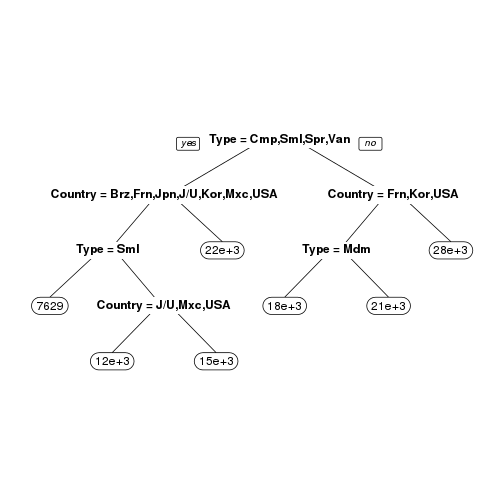

R's rpart package provides nice and easy way to use Recursive Partitioning and Regression Trees. It could be used to predict class membership or determine numeric vale. I recommend to use it with rpart.plot package for nicer tree plots.
QuantumDamage
R's rpart package provides nice and easy way to use Recursive Partitioning and Regression Trees. It could be used to predict class membership or determine numeric vale. I recommend to use it with rpart.plot package for nicer tree plots.
library(rpart)
library(rpart.plot)
fit <- rpart(Price ~ Mileage + Type + Country, cu.summary)
prp(fit)

In my application I'm using the same formula, but I'm applying it on sampled data frame based on slider value.
sampledDataFrame <- reactive({
...
sampled.df <- cu.summary[sample(x = nrow(cu.summary), size = input$slider1,
replace = FALSE), ]
...
)}
output$map <- renderPlot({
fit <- rpart(Price ~ Mileage + Type + Country, sampledDataFrame())
prp(fit)
})
Application can be viewed here: http://quantumdamage.shinyapps.io/ass1/
There are two small bugs described in application, but those bugs are related to usability not actual engine/modeling.
Thanks for attention.